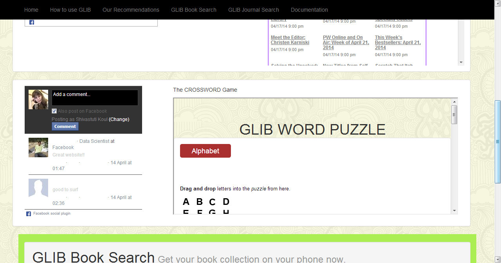
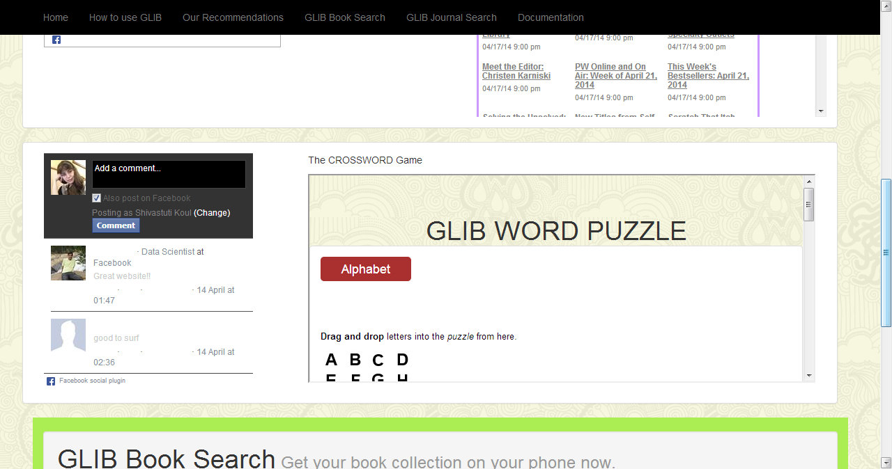

View Account
The user Account enables a user to post comments,view other users activities,post their own view using Facebook login.It serves as a discussion portal for the website for all the book-lovers.
One can also play a small word game posted on the user account and make use of the intrinsic features of the site like searching for a book or the latest journal in a field.


